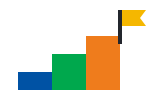
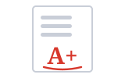

01Lessons · មេរៀនcourse
I take an English course after school.
ខ្ញុំរៀនវគ្គភាសាអង់គ្លេសក្រោយម៉ោងសិក្សា។
ពាក្យអំពីសាលារៀន · Power Up Level 6 · Unit 5 · Study smarter
These ten words let you talk about your whole school life in English: the lessons you take, the work you do, and the results you get.
One school term, in order: join a course, do your school work, then get your results.
Space listen · ← → move · K show text
I take an English course after school.
ខ្ញុំរៀនវគ្គភាសាអង់គ្លេសក្រោយម៉ោងសិក្សា។

This book is for level six students.
សៀវភៅនេះសម្រាប់សិស្សកម្រិតទីប្រាំមួយ។
This term, we learn about school and travel.
អាណត្តិសិក្សានេះ យើងរៀនអំពីសាលារៀន និងការធ្វើដំណើរ។
Write a short essay about your school.
សូមសរសេរអត្ថបទខ្លីមួយអំពីសាលារៀនរបស់អ្នក។
Our team project is about clean water.
គម្រោងក្រុមរបស់យើងនិយាយអំពីទឹកស្អាត។
Read the instructions before you start.
សូមអានការណែនាំមុនពេលអ្នកចាប់ផ្តើម។
Find information on the school website.
សូមរកព័ត៌មាននៅលើគេហទំព័ររបស់សាលា។
We have an English test on Friday.
យើងមានការប្រឡងភាសាអង់គ្លេសនៅថ្ងៃសុក្រ។

He got a high mark in English.
គាត់ទទួលបានពិន្ទុខ្ពស់ក្នុងភាសាអង់គ្លេស។
She got a certificate for her good work.
នាងទទួលបានវិញ្ញាបនបត្រសម្រាប់ការងារល្អរបស់នាង។
Two mix-ups learners make with these words.
No. A test is short and in class. An exam is longer and more important.
ទេ។ តេស្តខ្លី ហើយធ្វើក្នុងថ្នាក់។ ការប្រឡងធំវែងជាង ហើយសំខាន់ជាង។
Your Friday English test is a test, not an exam.
Say mark for school work. A point is one small part of a mark.
សូមនិយាយ mark សម្រាប់ការងារសាលា។ point គឺជាផ្នែកតូចមួយនៃពិន្ទុ។
British English uses mark: a high mark, a low mark, 10 out of 10.
Answer in your head, then tap Listen to compare.
I am taking an English course at level six.
ខ្ញុំកំពុងរៀនវគ្គភាសាអង់គ្លេសនៅកម្រិតទីប្រាំមួយ។
My next English test is on Friday.
តេស្តភាសាអង់គ្លេសបន្ទាប់របស់ខ្ញុំគឺនៅថ្ងៃសុក្រ។
I got a high mark for my essay.
ខ្ញុំទទួលបានពិន្ទុខ្ពស់សម្រាប់អត្ថបទរបស់ខ្ញុំ។
Short lines that always work.
Tap a word's play button to hear it. Hide one side, then recall it before you tap to check.
I take an English course after school. This book is for level six students. This term, we learn about school and travel.
ខ្ញុំរៀនវគ្គភាសាអង់គ្លេសក្រោយម៉ោងសិក្សា។ សៀវភៅនេះសម្រាប់សិស្សកម្រិតទីប្រាំមួយ។ អាណត្តិសិក្សានេះ យើងរៀនអំពីសាលារៀន និងការធ្វើដំណើរ។
Write a short essay about your school. Our team project is about clean water. Read the instructions before you start. Find information on the school website.
សូមសរសេរអត្ថបទខ្លីមួយអំពីសាលារៀនរបស់អ្នក។ គម្រោងក្រុមរបស់យើងនិយាយអំពីទឹកស្អាត។ សូមអានការណែនាំមុនពេលអ្នកចាប់ផ្តើម។ សូមរកព័ត៌មាននៅលើគេហទំព័ររបស់សាលា។
We have an English test on Friday. He got a high mark in English. She got a certificate for her good work.
យើងមានការប្រឡងភាសាអង់គ្លេសនៅថ្ងៃសុក្រ។ គាត់ទទួលបានពិន្ទុខ្ពស់ក្នុងភាសាអង់គ្លេស។ នាងទទួលបានវិញ្ញាបនបត្រសម្រាប់ការងារល្អរបស់នាង។
Q. Is a test the same as an exam?
Q. តើតេស្តដូចគ្នានឹងការប្រឡងធំដែរឬទេ?
A. No. A test is short and in class. An exam is longer and more important.
A. ទេ។ តេស្តខ្លី ហើយធ្វើក្នុងថ្នាក់។ ការប្រឡងធំវែងជាង ហើយសំខាន់ជាង។
Q. Do I say mark or point for my score?
Q. តើខ្ញុំគួរនិយាយ mark ឬ point សម្រាប់ពិន្ទុរបស់ខ្ញុំ?
A. Say mark for school work. A point is one small part of a mark.
A. សូមនិយាយ mark សម្រាប់ការងារសាលា។ point គឺជាផ្នែកតូចមួយនៃពិន្ទុ។
Q. What course are you taking?
Q. តើអ្នកកំពុងរៀនវគ្គអ្វី?
A. I am taking an English course at level six.
A. ខ្ញុំកំពុងរៀនវគ្គភាសាអង់គ្លេសនៅកម្រិតទីប្រាំមួយ។
Q. When is your next test?
Q. តើតេស្តបន្ទាប់របស់អ្នកនៅពេលណា?
A. My next English test is on Friday.
A. តេស្តភាសាអង់គ្លេសបន្ទាប់របស់ខ្ញុំគឺនៅថ្ងៃសុក្រ។
Q. What mark did you get for your essay?
Q. តើអ្នកទទួលបានពិន្ទុប៉ុន្មានសម្រាប់អត្ថបទរបស់អ្នក?
A. I got a high mark for my essay.
A. ខ្ញុំទទួលបានពិន្ទុខ្ពស់សម្រាប់អត្ថបទរបស់ខ្ញុំ។
Can you repeat the instructions, please?
សូមលោកគ្រូនិយាយការណែនាំម្តងទៀតបានទេ?
I need more information, please.
ខ្ញុំត្រូវការព័ត៌មានបន្ថែម សូម។
Say it in your head first, then tap the box to check.